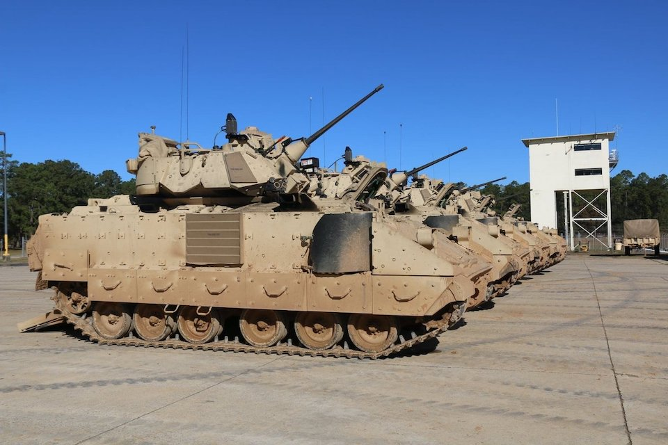
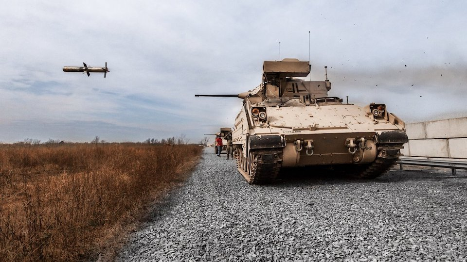
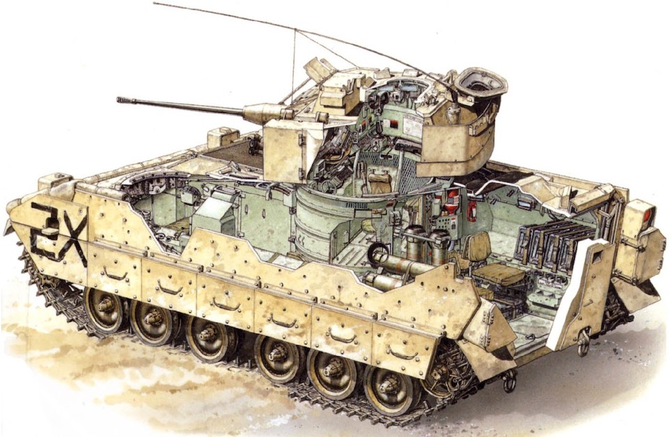

Описание
Боевая машина пехоты Bradley – это первая в своем классе машина, созданная американцами для нужд своей армии. Разработка БМП началась еще в 1964 году, однако испытания машины продолжались вплоть до 1981 года. Именно тогда Bradley в своей первой версии начала поставляться на вооружение армии США. В то время альтернатив на БМП не существовало, ведь она стала заменой бронетранспортера М113, который кстати уже применяется украинскими воинами.
Из открытых данных Украине передали около 400 единиц М113, и они, несмотря на почтенный возраст, показали успешную работу. Bradley не уступает предшественнику, ведь в течение 40 лет остается актуальным и получает модификации, чтобы сохранять надежную репутацию.
БМП Bradley имеет боевой опыт в военных действиях в Персидском заливе, Ираке и Афганистане. Операторами этой машины являются США, Хорватия и Ливан. Интересным фактом в истории этой машины выступает статистика подбитых танков, ведь в Ираке Bradley показали себя лучше известных танков Abrams.
Даже спикер Пентагона генерал Пэт Райдер в своем недавнем брифинге назвал Bradley «истребителями танков» и подтвердил, что это вооружение можно использовать как для оборонных, так и для наступательных действий. В Пентагоне также отмечают, что подготовка военных, которые будут руководить БМП, займет недели, а не месяцы, их обучение будет проходить в Германии. Ориентировочно за 4 недели можно обучить около 500 бойцов, которых хватит для формирования одного батальона.
Такая огласка в прессе вероятно не на шутку испугала нашего врага, ведь россияне уже успели отчитаться по поводу уничтожения четырех единиц Bradley, хотя машины еще не успели попасть на фронт.
Ложь представителей минобороны рф не удивляет, однако реакция врага только демонстрирует волнение перед новейшим западным вооружением.
К слову, БМП названа в честь американского генерала Омара Брэдли, являвшегося одним из командиров армии США в Европе во времена Второй мировой войны. Символично, что машина будет использоваться в Европе и создавалась во времена Холодной войны, то есть с целью уничтожения именно советской техники, которой пользуются россияне. Bradley превосходит советские аналоги как в степени защиты брони, так и эффективности вооружения.
Почему Bradley в модификации M2A2 ODS?
Рассмотрим конструкцию машины поподробнее, именно в той модификации, которую передает Пентагон. Bradley M2A2 ODS – версия БМП, разработанная американцами с учетом своего опыта в военной операции “Буря в пустыне”, которая проходила в 1991 году в Ираке.
Эта версия получила прокачанную информационно-управляющую систему FBCB2 (Force XXI Battle Command Brigade and Below) для обмена данными со спутниками и другими подразделениями. Также Bradley M2A2 ODS поддерживает навигационную систему TACNAV, обладает улучшенной защитой и организацией десантного отделения, в котором помещается 6-7 человек. В отличие от базовой версии десант размещается на скамейках, с которых можно быстрее покинуть машину, имеет подогреватели для сухих пайков и монитор для вывода картинки из прицелов.
Экипаж машины состоит из командира боевой машины, оператора-наводчика и водителя. Помимо конструктивных улучшений и цифровых решений, БМП в этой версии оснащается лазерным дальномером с дальностью 10 километров и тепловизором для водителя. Такие средства обнаружения позволяют эффективно действовать даже в темное время суток, а улучшенные средства связи позволяют БМП оставаться частью единой сети с подключением к спутникам.

Командир машины имеет в руках все, что необходимо для управления. Он видит всю обстановку, может координировать цели, управлять подразделениями в соответствии с быстрыми изменениями в поле боя. Например, управление пушкой и поворотом башни осуществляется джойстиком. Наводчик управляет огнем из всех видов вооружения БМП: 25-мм миллиметровой пушки М242 Bushmaster, 7,62-мм пулемета и ПТРК TOW. С остального БМП имеет стационарные 5,56-мм автоматы для десанта.
Всего на носовой части башни установлено восемь дымовых гранатометов, по четыре по бокам от основного вооружения. Машина также вооружена двумя пусковыми установками противотанковых ракет, установленными слева от башни, способными вести огонь ракетами TOW 2. Для пробития танков, защищенных динамической броней, TOW 2 оснащен тандемной боевой частью. В M2A2 противотанковая ракета Dragon была заменена хорошо известной украинцам Javelin.
Защита машины состоит из алюминиевых бронепластин, комбинации стали и алюминия, легированного марганца, хрома, магния и цинка, а также используются стальные плиты для защиты нижней части машины от мин.
Дополнительная броня и внутренние усовершенствования увеличили вес Bradley с 25 до 33 тонн. Зато обновленная броня защищает Bradley от 30-мм снарядов APDS и РПГ (или подобного противотанкового оружия).
Двигатель машины Cummins VTA-903 позволяет развивать скорость до 66 км в час по шоссе, 40 км по бездорожью. Bradley M2A2 оснащена новой трансмиссией, а чтобы справиться с увеличенным весом, к подвеске добавили более крепкие торсионы. Гусеничное шасси отличается превосходной проходимостью, БМП даже преодолеет водные помехи водой со скоростью до 7,2 км/ч.
Технические характеристики БМП Bradley M2A2 ODS:
- Вага-33т
- Длина-6.55м
- Ширина-3.28м
- Высота-2.97м
- Экипаж-3 человека
- Десант-6,7 бойцов
- Дальность огня (25 мм пушка)-2км
Применение на фронте
По словам военного эксперта Михаила Самуся, Bradley выступает хорошим примером мощной боевой машины, способной пойти на прорыв. Первый транш Bradley способен сформировать кулак, который на определенных направлениях может помочь прорывать фронт, что подтверждают и в Пентагоне.
Американцы уверены, что Bradley может показать эффективность в наступательных действиях, а главное выполнит свою основную функцию – перевозку военных в зонах повышенного риска. Bradley это надежная платформа с проверенными противотанковыми и противопехотными средствами борьбы.
Военный эксперт Олег Жданов очерчивает перспективные направления применения Bradley – перевозка и прикрытие пехоты, а также огневая поддержка как в наступлении, так и в обороне.
Учитывая последние события на фронте, когда враг активизировался на восточных направлениях, такая защищенная машина поможет эффективно останавливать «мясные волны» вагнеровцев и прикрывать украинскую пехоту, борясь за каждый сантиметр Донбасса и не только.